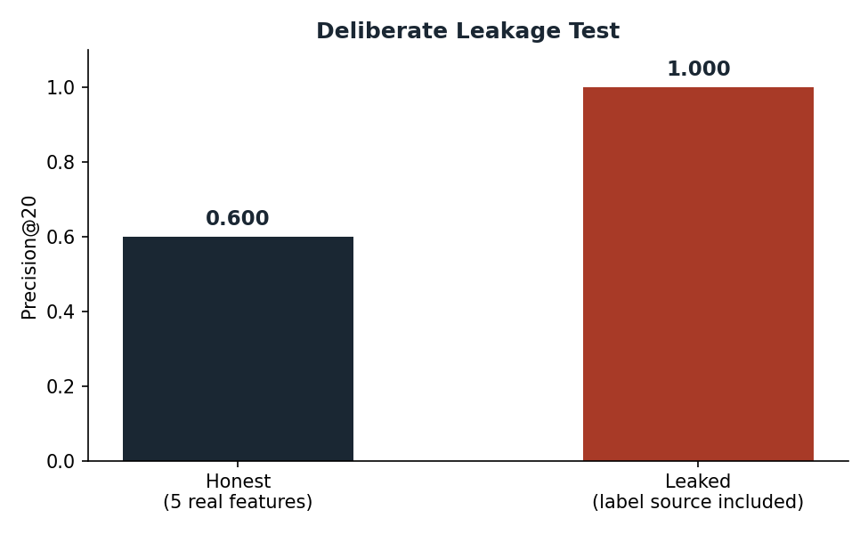
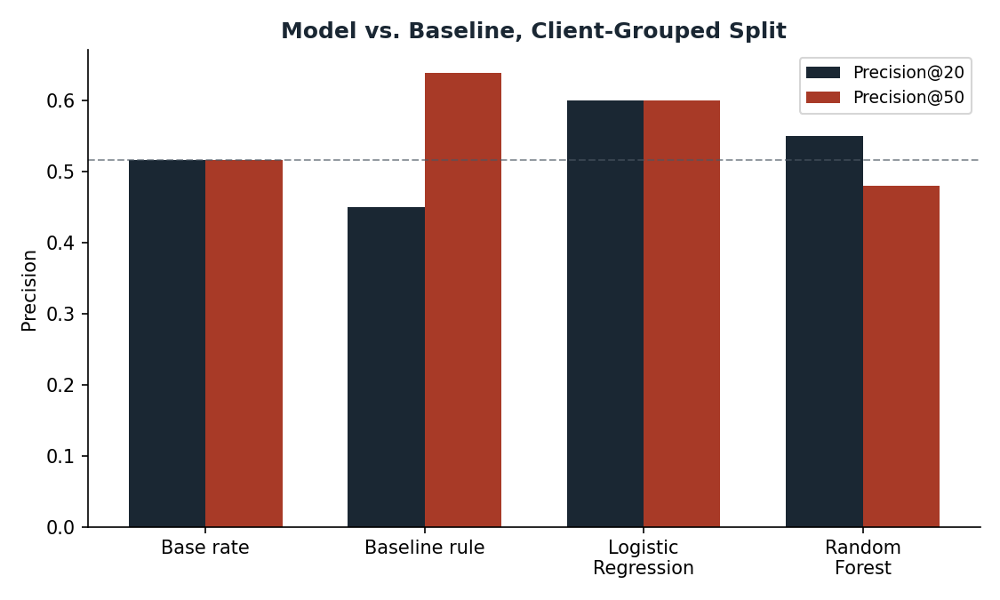
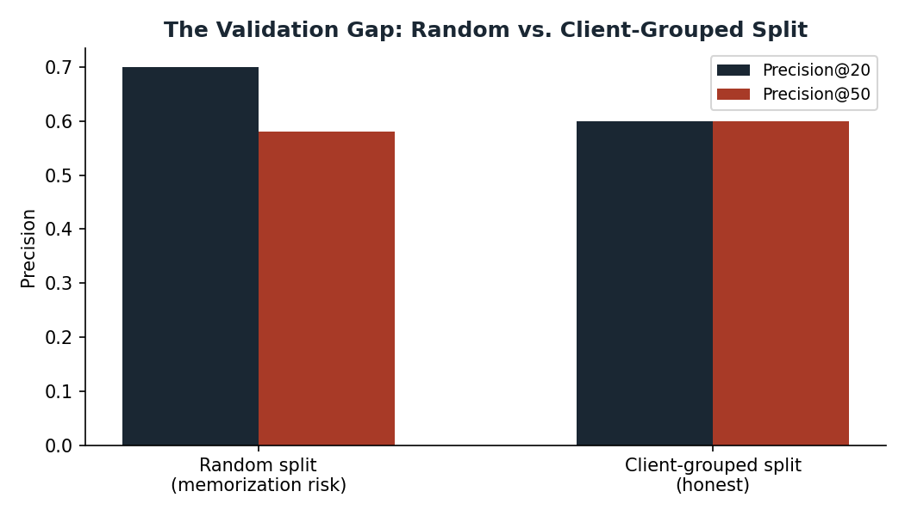
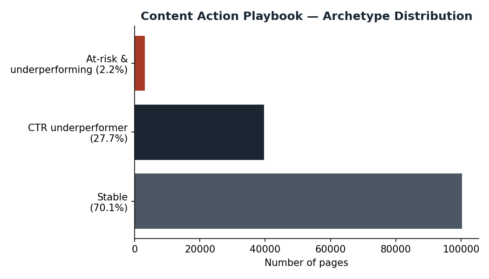

Content teams have more pages than review time — so which ones get checked first? This paper builds a decision-support model on FlyRank's real search-performance warehouse (78.8M rows, March–April 2026) that ranks pages by observed decline risk. A client-grouped Logistic Regression model reaches Precision@20 and Precision@50 of 0.600 against a base rate of 0.517 — a real, if modest, lift — while a random (non-grouped) split on the same data inflates Precision@20 to 0.700, demonstrating the memorization risk a naive validation design hides. This is a decision-support tool only: it ranks candidates for human review, and makes no causal claim that reviewing a flagged page will fix it.
This is the real decision FlyRank's own content workflow faces: across a client's full page catalog, which pages deserve a reviewer's limited time first? FlyRank's product already runs a hand-tuned rule for this (Lane 2: Refresh/Content Opportunity Scoring) — this paper builds and validates a learned alternative to that same real decision, as an applied case study on FlyRank's own data, not a synthetic exercise.
A small content team can realistically review 20–50 pages a week, out of a catalog that may hold tens of thousands. The real decision isn't "which pages are declining" in the abstract — it's "which pages should the one available reviewer look at first, today." A wrong answer here has a real cost either way: a false positive wastes a reviewer's limited hour on a page that didn't need it; a false negative lets a real decline run unnoticed for another month.
This project builds that ranking, using only signals knowable before the decision point, validated in a way that actually predicts how the model will perform on a client it has never seen — the situation the tool will actually face in practice.
Built on the FlyRank ML Internship warehouse release (build flyrank_pseudonymized_warehouse_release_v20260703), specifically fact_content_daily_performance — 78,835,655 rows, daily grain, spanning 2025-01-27 to 2026-06-30 across an unbalanced panel of clients.
This paper uses two month-partitions: March 2026 for features (9,841,378 rows, 331,437 distinct pages, 55 clients) and April 2026 for the label — a genuinely future, observed outcome rather than a same-window proxy. The final month of the release (June 2026) was deliberately never used for label logic, per the internship's own warning that it is a sealed test window, not a random sample.
What was excluded, and why: GA4-derived engagement signals (session behavior, scroll depth) were excluded entirely — only 4.2% of March rows had GA4 data available, so any feature built on it would only be usable for a small, non-representative slice of pages. trend_direction and trend_pct were excluded as label-derived. No client names, raw URLs, or raw queries appear anywhere in this analysis — only pseudonymized hash IDs and aggregate metrics.
One row = one page's monthly aggregate (content_hash_id), matching how Lane 2 actually ranks pages, not page-days.
is_declining = 1 if April impressions fell below 80% of March impressions, else 0. This is an observed future outcome — not a rule-computed proxy like the starter dataset's trend_direction bucket.
Five features, all built from March alone, each knowable before the April outcome: impressions_mar, clicks_mar, avg_position_mar (with 0 treated as "no data," not rank zero), ctr_mar, and active_days_mar (a consistency signal — distinct days with any recorded impressions).
A transparent rule: flag a page if it has real visibility (impressions_mar ≥ 500) and its CTR falls below its own position tier's expected CTR (fit on train only). Reason code: ctr_underperformance_visible.
Client-grouped split (GroupShuffleSplit on client_hash_id, 75/25, 33 train / 12 test clients, zero client overlap verified) — not a random split, since pages from the same client can share site-specific patterns a random split would let the model memorize.
Full seven-point attack checklist run and passed: clean feature/label window boundary, no label-derived columns among the features, no product flags used, a client-grouped split, base rate reported alongside every metric, modest and non-dominant feature importances, and out-of-fold evaluation throughout. As direct verification, the label's own source column (impressions_apr) was deliberately added as a feature — Precision@20 jumped from the honest 0.600 to 1.000, confirming the test harness genuinely detects leakage rather than passing by accident.

Base rate (share of pages that actually declined): 0.517. Comparison below uses the same client-grouped split and the same metric for every method.

| Method | Precision@20 | Precision@50 |
|---|---|---|
| Base rate | 0.517 | 0.517 |
| Baseline rule | 0.450 | 0.640 |
| Logistic Regression | 0.600 | 0.600 |
| Random Forest | 0.550 | 0.480 |
Honest note on the baseline: the baseline rule was originally built to flag CTR-vs-position underperformance — a different target than is_declining. Scoring it against a label it was never optimized for likely explains its inconsistency across K more than any flaw in the rule itself.
A model is only as trustworthy as its validation design. Below, the same Logistic Regression model is scored two ways: once with a random split (which lets pages from the same client land in both train and test), and once with the client-grouped split used everywhere else in this paper.

Scoring the full March slice (143,183 pages) with the validated Logistic Regression model, combined with the baseline's CTR-gap signal, produces three real archetypes:

| Archetype | Pages | Action |
|---|---|---|
| Stable | 100,340 (70.1%) | Monitor |
| CTR underperformer | 39,658 (27.7%) | Review title/meta |
| At-risk & underperforming | 3,185 (2.2%) | Priority review |
No page should be auto-edited, auto-republished, or auto-removed from this ranking alone. This queue must never be used as the sole basis for evaluating a writer's or team's performance — it measures pages, not people. No claim that a refresh "will" fix a page should be made from this ranking without a real experiment.
All work is in the public repository, seeds fixed at random_state=42 throughout.